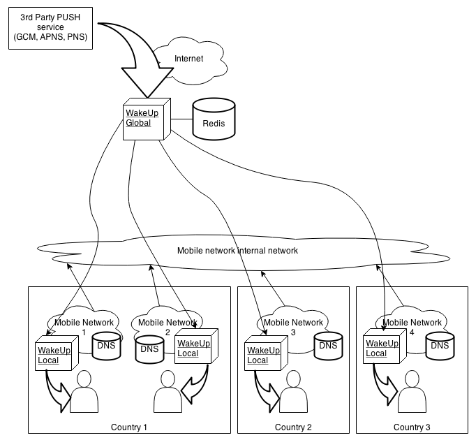

Table of Contents
This chapter explains the requirements, to install and configure the wakeup platform correctly
|  |
This server shall be installed inside mobile networks so it has a network interface into the same IP segment as mobile phones.
Also it needs a second network interface which connects this nodes to the global one (through operator dedicated networks, VPNs, ...)
Local node will receive HTTP queries to three resources (about, status and wakeup), so any other HTTP query can be securelly filtered.
Finally, this server will send TCP and/or UDP queries to the mobile network.